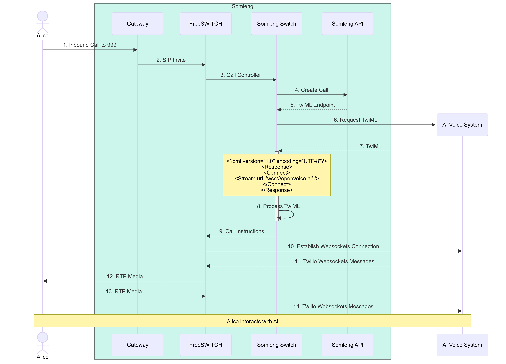
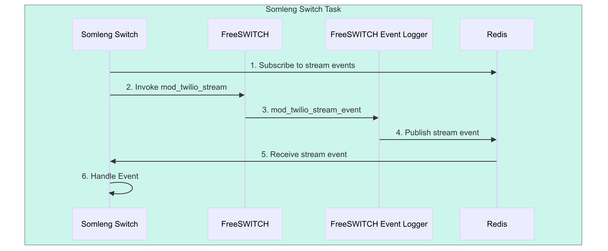
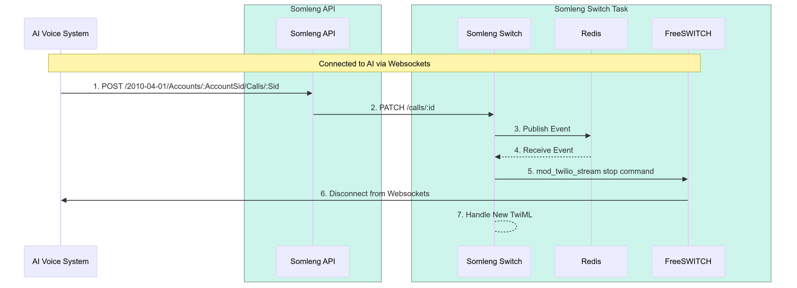
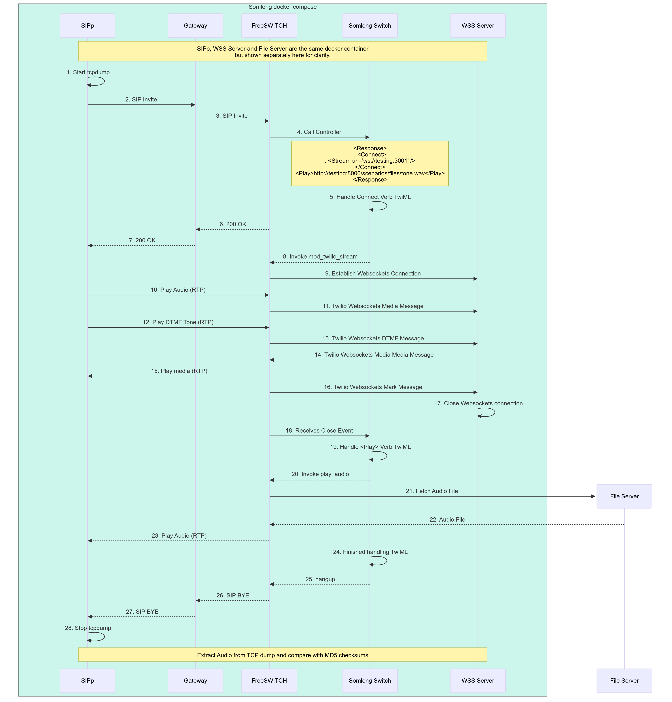

Many AI voice systems, such as Retell AI and Vocode are built on top of Twilio. While Twilio is an excellent platform for rapid development, building an AI voice business solely on top of it comes with significant risks such as deplatforming and prohibitive costs.
Somleng addresses these risks by offering an open-source alternative, giving businesses the freedom to self-host or work with lower-cost providers. Since Somleng offers full compatibility with the Twilio API, AI-powered voice systems built on Twilio can easily transition to Somleng without requiring significant changes to their existing codebase or architecture. This enables businesses to easily transition to a more customizable and cost-effective open-source alternative, without having to overhaul their existing Twilio-based workflows.
In this post, we'll walk you through the technical journey of integrating AI into Somleng's voice platform—combining key architectural decisions, the challenges we faced and the solutions we developed to overcome them.
Twilio's <Stream> noun,
used within the <Connect> verb, is a set of TwiML™
instructions which enables
real-time streaming of voice data to external systems for AI processing. It allows live audio from a
call to be streamed over WebSockets to AI-driven platforms, where speech recognition, natural language
processing, or machine learning algorithms can analyze the conversation in real time. This makes it
ideal for building voice-powered AI applications like interactive voice response (IVR), real-time
transcription, sentiment analysis, and intelligent customer support bots, enhancing the call experience
with AI capabilities. Most existing AI Voice systems, such as Retell
AI
and Vocode return the following TwiML
instructions to initiate a connection with Twilio.
<?xml version="1.0" encoding="UTF-8"?>
<Response>
<Connect>
<Stream url="wss://example.com/audiostream" />
</Connect>
</Response>
After Twilio parses this TwiML document, it opens a Websockets connection to the AI voice system by
connecting to the
URL
provided in the
url attribute of the <Stream> noun. Audio is Base64 encoded, included
in a
Twilio defined Websocket message
and sent
bi-directionally between Twilio and the AI voice system. Below is an example of a
Media message.
{
"event": "media",
"sequenceNumber": "3",
"media": {
"track": "outbound",
"chunk": "1",
"timestamp": "5",
"payload": "no+JhoaJjpz..."
} ,
"streamSid": "MZXXXXXXXXXXXXXXXXXXXXXXXXXXXXXX"
}Twilio receives websockets messages sent from the AI voice system over the websockets connection and returns audio to the caller, while the AI Voice system receives websockets messages from Twilio to interperate audio from the caller. See below:

When you make a call to Twilio a bunch of stuff happens behind the scenes which allows developers to programmatically control the call using TwiML™. Twilio encapsulates this logic into a black box. In this section we'll open up the black box and do a bit of a deep dive into how Somleng handles this process. We'll then build on this knowledge to explain how we handle the <Connect> verb.

The diagram above is a high-level overview of how incoming calls are handled by Somleng explained in more detail below:
<?xml version="1.0" encoding="UTF-8"?>
<Response>
<Say>Hello World<</Say>
</Response>
Now that we have a high-level overview of how Somleng handles incoming calls, let's take a look at introducing the <Connect> verb.
The diagram above shows what happens when we introduce the <Connect> verb. Note that steps 1-6 are the same as in the previous section and we have just replaced the Customer App with the AI voice system. Let's explore what happens from step 7 in more detail below:
<?xml version="1.0" encoding="UTF-8"?>
<Response>
<Connect>
<Stream url="wss://openvoice.ai" />
</Connect>
</Response>wss://openvoice.ai
wss://openvoice.ai and sends
the connected message followed by the start message.
{
"event": "connected",
"protocol": "Call",
"version": "1.0.0"
}{
"event": "start",
"sequenceNumber": "1",
"start": {
"accountSid": "ACXXXXXXXXXXXXXXXXXXXXXXXXXXXXXX",
"streamSid": "MZXXXXXXXXXXXXXXXXXXXXXXXXXXXXXX",
"callSid": "CAXXXXXXXXXXXXXXXXXXXXXXXXXXXXXX",
"tracks": [ "inbound" ],
"mediaFormat": {
"encoding": "audio/x-mulaw",
"sampleRate": 8000,
"channels": 1
},
"customParameters": {
"FirstName": "Jane",
"LastName": "Doe",
"RemoteParty": "Bob",
},
},
"streamSid": "MZXXXXXXXXXXXXXXXXXXXXXXXXXXXXXX"
}media messages to the FreeSWITCH task via the Websockets
connection such as:
{
"event": "media",
"sequenceNumber": "3",
"media": {
"track": "outbound",
"chunk": "1",
"timestamp": "5",
"payload": "no+JhoaJjpz..."
},
"streamSid": "MZXXXXXXXXXXXXXXXXXXXXXXXXXXXXXX"
}media message and sends it to the AI
voice
system over the Websockets connection.
{
"event": "media",
"sequenceNumber": "135",
"media": {
"track": "outbound",
"chunk": "1",
"timestamp": "10",
"payload": "no+JhoaJjpz..."
},
"streamSid": "MZXXXXXXXXXXXXXXXXXXXXXXXXXXXXXX"
}In order to handle steps 10 through 14 above we got some help from an engineer at one of our customers Nucleus to write a FreeSWITCH module called mod_twilio_stream. The module was based on the mod_audio_fork by Drachtio, and adds support for Twilio defined Websocket messages. The implementation details of the module is beyond the scope of this article, but the source code is available in the Somleng Switch Github repository.
In order to handle steps 8 and 9 we needed to figure out a way to invoke the new mod_twilio_stream module with the websockets URL after parsing the TwiML received in step 7. Somleng Switch uses Adhearsion which is a Ruby based voice application development framework to handle APIs such as playing audio files, recording calls and handing text-to-speech (TTS). Under the hood, Adhearsion uses mod_rayo to invoke commands on FreeSWITCH. Digging through the mod_rayo source code, we found an API for executing arbitrary API commands on FreeSWITCH. We can then make use of this API allows us to invoke mod_twilio_stream with the required dynamic arguments such as the websockets URL. The actual implementation details of this is beyond the scope of this article, but the source code is available in the Somleng Switch Github repository.
The <Connect> verb specification states that:
"To start a bidirectional Media Stream, use <Connect> <Stream>. These TwiML instructions block subsequent TwiML instructions unless the WebSocket connection is disconnected."Therefore, we need to add code in order to handle events coming from mod_twilio_stream such as stream disconnect events.
FreeSWITCH event logger
is a sidecar container written in Go that
runs alongside
Somleng Switch and FreeSWITCH. Its main task is to log
FreeSWITCH heartbeat events which is used to auto-scale FreeSWITCH
tasks based on
the
Session-Count attribute.
We can also use it to parse custom events from mod_twilio_stream and publish them to a Redis channel for the audio stream. Somleng Switch subscribes to this channel in order to handle the events.
The diagram above shows how events are handled.
In order to modify an in-progress call which is connected to the AI, we had to implement our own version of Twilio's Update a Call resource API. This API allows you to modify and in-progress call by providing a new set of TwiML instructions or a new URL providing TwiML instructions for the call.
In order to implement this feature we also make use of Redis pub/sub to publish call update events. More details about the implementation can be found in the Somleng Switch Github repository.
The diagram above shows how live call updates are handled.
{
"event": "stop",
"sequenceNumber": "5",
"stop": {
"accountSid": "ACXXXXXXXXXXXXXXXXXXXXXXXXXXXXXX",
"callSid": "CAXXXXXXXXXXXXXXXXXXXXXXXXXXXXXX"
},
"streamSid": "MZXXXXXXXXXXXXXXXXXXXXXXXXXXXXXX"
}In order to test the complete setup we wrote some integration tests with SIPp and docker compose. These tests are run as part of the Somleng Switch integration suite on Github Actions.
The sequence diagram below above shows how this integration test works and is explained in more detail below. Note that SIPp, WSS Server and File Server are all running on the one docker container in the docker compose file, but are shown separately in the diagram for clarity.
<?xml version="1.0" encoding="UTF-8"?>
<Response>
<Connect>
<Stream url="ws://testing:3001" />
</Connect>
<Play>http://testing:8000/scenarios/files/tone.wav</Play>
</Response>After we have captured the a trace with tcpdump we extract the audio using tshark and ffmpeg. We then compare the MD5 checksum of the audio received by the Websockets server as well as the audio received by the SIPp UAC from the <Play> verb and compare it with the MD5 checksum of the audio files. If the checksums match then the test passes, otherwise it fails.